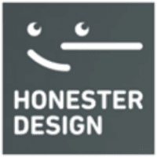
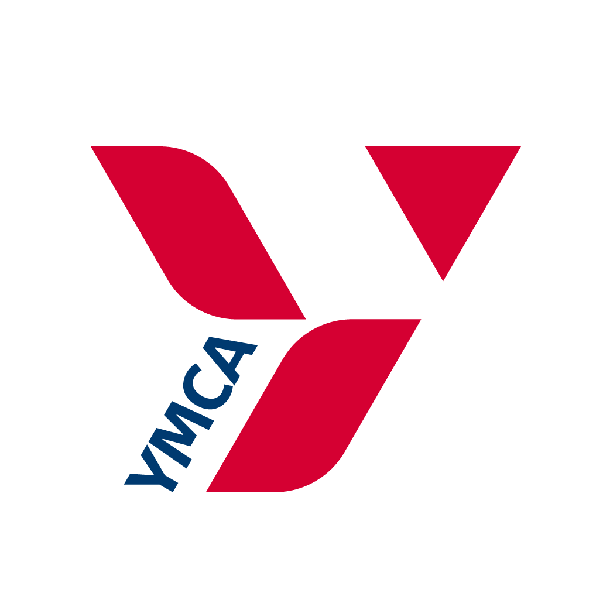

業務主管
誠實設計有限公司
2021/02 - Present
公司業務內容包含系統建置、平面設計、客服外包，而我的工作主要為統整船務訂/取票系統的需求，以及開發陌生票卷平台，讓合作的船公司能有更多網路曝光的機會。

2020 - 2021
福岡YMCA語言學校
數位資訊媒體

2017 - 2019
國立高雄餐旅大學
NATIONAL KAOHSIUNG UNIVERSITY OF HOSPITALITY AND TOURISM
旅運管理系
好想搭上火箭啊！！！
之前因為公司訓練接觸到網頁開發這一塊，後來又參加六角學院的體驗營也順利拿到證書，雖然到目前為止都還是只能處理靜態的網站，但對我來說，跨出第一步永遠比跨出第二步困難，如果有幸能搭乘這趟前端開發訓練的火箭，我希望我能利用VUE開發出一套簡單的物流貨品回報系統，讓家裡的公司跟上網路時代的潮流。
- HTML/CSS
- Bootstrap
- JQuery
- 基礎JavaScript
技能
- 進階JavaScript
- Vue.js
- API串接
- 資料庫建立與串接
- 網頁開發速功魔法
想獲得的技能
- Japanese — 專業
- English — 中階